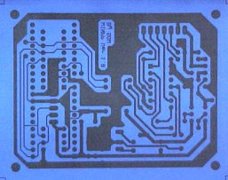
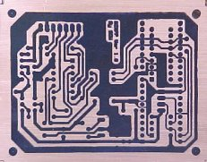
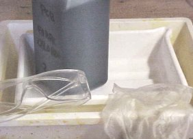
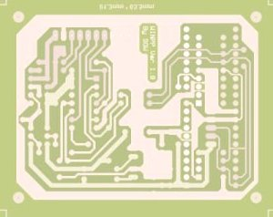
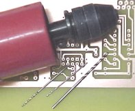

Links
Links One of the most discouraging things about making a hardware project (apart from obtaining all of the components) is building the printed circuit board - PCB. It is sometimes possible to use strip board or some other pre-fabricated board but more often than not the circuit complexity and performance requires a proper PCB to be made. The good news is that due to improvements in printing and processing technologies it is now relatively easy to make inexpensive high quality PCB's at home.
WARNING: Making PCB's requires the use of Ferric Chloride (FeCI3) which is corrosive so avoid skin and eye contact. Remember safety first use glasses, gloves and protective overalls. Ferric Chloride is also very good at distorting cloths weeks after you think you have washed it off. If you do get any on your skin then wash it off immediately with lots of water and soap.
The Shopping List
This is the minimum things you will heed,
1. Access to a PC with a Laser
printer eg: HP Laser Jet
2. Cloths iron
3. Kettle
4. Water bucket
5. A one litre glash jar with
plastic screw top (biscuit jar)
6. PCB hand drill with 0.8mm and
1mm
drill bits - FR84F, QY64U
7. Copper-Clad fiberglass board -
WF40T
8. Press-n-Peel PCB transfer
system - AB15R
9. Ferric Chloride Copper etching
fluid
250ml - WF10L
10. Two plastic etching trays
(ideally different sizes) - CH38R
11. PCB cleaning rubber - HX04E
12. PCB solvent cleaner - LL59P
13. Safety glasses, latex gloves,
old
clothes/overalls - KE83E, YJ84C
All part numbers are from the Maplin Electronics catalogue.
The Artwork
Until recently the artwork had
been an area of DIY PCB manufacture which caused the biggest problems.
But now by combining high quality laser printing with the Press-n-Peel
PCB transfer system these problems have been solved. The first
stage is to transfer the circuit layout from the PC to the special
Press-n-Peel film. You will find that my projects provide Laser print
files (.prn) for printing the circuit
layout direct onto this film,
|  | 1. I cut the
Press-n-Peel film in half for small boards so it lasts longer
2. Put the film in the laser printer so that the print will appear on matt blue side 3. At a DOS command prompt type: copy filename.prn lpt1 to print onto the film |
This will produce a contact print where the black
image will end up as Copper on the final PCB. Now to transfer the
artwork to the
Copper board by following the instructions with the Press-n-Peel film,
|  | 1. Clean the Copper board very well with the
PCB cleaning rubber 2. Heat the cloths iron to 300 deg.F (Acrylic to Polyester setting) 3. Hold the film with the print in contact to the Copper and smoothly iron the film down until the print appears black through the film (about 1min) 4. Allow 5mins to cool down (or speed this up with water) then peel the film off |
This should produce a clean black print onto the Copper. If you let the film move or overheat then you will find that the tracks and writing will be smeared and out of focus also the film may be wrinkled up. If you don't use enough heat or heat unevenly then the film may not stick or be dark enough. In either case clean off the PCB and try again, you should get it right after a couple of goes.
The Etching
Now for the messy bit, etching the PCB to remove the
unwanted Copper. Please read the warning at the top of the page as it
is important to take appropriate precautions before handling the etch
chemicals. I recommend you do this outside or in a shed and you must
ware glasses and gloves. Keeping
the etch chemicals warm (45deg C) is essential as it reduces the etch
time
from over an hour to about 15mins.
|  | 1. Dilute the concentrated Ferric Chloride
fluid with water (1:1) and pour into the one letre glass jar and screw the top on 3. Place a sheet of news paper on a flat surface and put the trays on this 2. Fill the kettle with water and boil 3. Heat the Ferric Chloride jar in a bucket of hot water. Caution don't spill any drops and keep away from food |
|  | 1. Pour 1cm of boiling water into the bottom
tray then place the other tray on top 2. Put the PCB copper side up on the top tray and pour all the Ferric Chloride on top 3. Gently rock the top tray to keep the etch fluid moving avoiding spillage 4. After about 15mins all of the unwanted Copper should have disappeared 5. Remove the board and drop it into a bucket of cold water to clean off |
Usefull tip: For small boards just drill a 1mm hole in the corner of the board and tie 2ft of strong cotton to this. Now put the board straight into the Ferric Chloride jar with the end of the cotton outside and put the top on the jar. Keep the jar hot by heating in a tray of boiling water and gently rock to keep the etch fluid moving. Every 5mins use the cotton to lift the board out and check progress. This method is much less messy as the Ferric Chloride is always left in the glass jar.
Drilling
Drilling with 0.8mm drill bits
can be a bit tricky as it's easy to break the drill bits. Always hold
the drill straight and do not bend it when the hole has started.
Putting a soft block of wood under the PCB provides a good base to
drill into. Once you have become
experienced at drilling I would recommend using Tungsten Carbide drills
(FE49D)
which easily break but last much longer,
|  | 1. Dry off the board and clean away the blue
etch resist with PCB solvent cleaner 2. Using a 0.8mm PCB drill bit drill out all of the component holes 3. Some 1mm holes may need to be made for connectors, 3mm for corner fixings 4. Finally use a PCB rubber to clean the copper ready for soldering |
So now your PCB's finished and you can start soldering the components in. You should do this soon after you have cleaned the PCB (within 1 hour) as the copper soon oxidises and becomes hard to solder onto.
Links
Maplin Electronics home page
Frontier Engineering
the
U.S. Distributor for Maplin Electronics
UK based low cost Press-n-Peel
sheets
EAGLE PCB software
Olimex PCB
manufacture